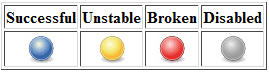
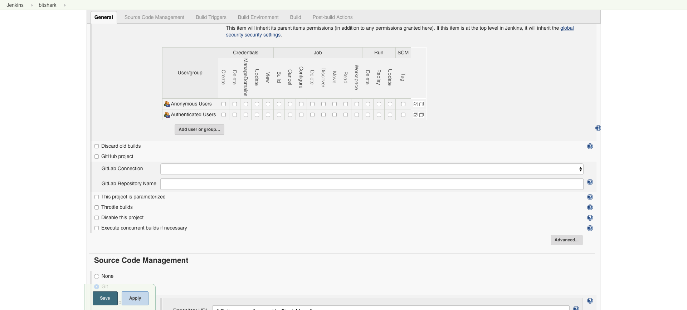
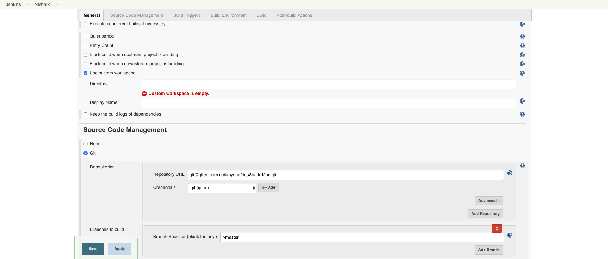
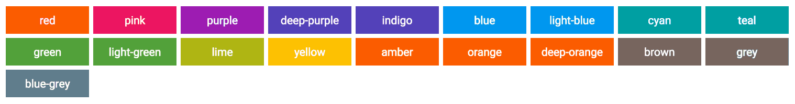
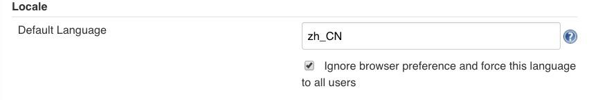

基础配置¶
什么是 jenkins?
持续集成、自动测试、持续部署的超级引擎，支持自定义工具集、多种交付通道。
镜像管理¶
Jenkins 官方提供了一个 镜像列表 ，会列出最快的镜像。
进入 Jenkins 页面，点击 Manager Jenkisn –> Manager Plugins –> Advanced
将 Update site 更换为
https://mirrors.tuna.tsinghua.edu.cn/jenkins/updates/current/update-center.json
Jenkins 目录¶
| 目录 | 内容 |
/var/lib/jenkins |
主目录 |
/var/lib/jenkins/workspace |
工作空间 |
/etc/init.d/jenkins |
启动文件 |
/etc/sysconfig/jenkins |
配置文件 |
/var/cache/jenkins |
网页文件 |
/var/log/jenkins |
日志文件 |
卡启动问题¶
Jenkins 在第一次启动的时候会向官网回传信息，如果网络在线，但是 Jenkins 不能访问 https://jenkins-ci.io 这时关闭网络，离线就能正常安装
升级¶
Jenkins 升级比较简单，我们只需要下载你需要更新版本的 war 包，替换 /usr/lib/jenkins/jenkins.war 。
停止 Jenkins 服务
Attention
记得备份原来的 jenkins.war，以防万一
替换最新的 war 包，并启动 jenkins
备份¶
tar zcvf jenkins.tar.gz /var/lib/jenkins
写一个每天定时备份的脚本，保留 15 天的备份。
#!/usr/bin/env bash
#set -x
BACKUP_PATH="/opt/jenkins_backup"
JENKINS_WAR_BALL_PATH="/usr/lib/jenkins"
JENKINS_WAR_VERSION_BALL_PATH="${JENKINS_WAR_BALL_PATH}/versions"
JENKINS_HOME_PATH="/var/lib/jenkins"
BACKUP_ROTATE="5"
DATE_DAY=`date +%F`
JENKINS_REPO_URL="https://mirrors.tuna.tsinghua.edu.cn/jenkins/war/" ## TUNA
#JENKINS_REPO_URL="http://mirrors.ustc.edu.cn/jenkins/war/" ## USTC
#JENKINS_REPO_URL="http://mirrors.jenkins.io/war/" ## JENKINS
function backup_rotate() {
DELETE_DATE_DAY=`date -d "+${BACKUP_ROTATE} day ago" +%F`
if [ -f ${BACKUP_PATH}/jenkins_${DELETE_DATE_DAY}.tar.gz ]; then
rm -rf ${BACKUP_PATH}/jenkins_${DELETE_DATE_DAY}.tar.gz
fi
}
function Backup() {
backup_rotate
test -d ${BACKUP_PATH} || mkdir -p ${BACKUP_PATH}
echo "[`date +'%Y-%m-%d %H:%M:%S'`] start backup"
if [ ! -f ${BACKUP_PATH}/jenkins_${DATE_DAY}.tar.gz ]; then
start_backup_second=`date +%s`
cd ${JENKINS_HOME_PATH} && tar -zcPf ${BACKUP_PATH}/jenkins_${DATE_DAY}.tar.gz .
stop_backup_second=`date +%s`
let use_time=${stop_backup_second}-${start_backup_second}
echo "[`date +'%Y-%m-%d %H:%M:%S'`] use time ${use_time}s"
echo "[`date +'%Y-%m-%d %H:%M:%S'`] file size `du -h ${BACKUP_PATH}/jenkins_${DATE_DAY}.tar.gz`"
else
echo "[`date +'%Y-%m-%d %H:%M:%S'`] Backup completed today!"
fi
echo "[`date +'%Y-%m-%d %H:%M:%S'`] stop backup"
}
function Recovery() {
find ${BACKUP_PATH} -name "jenkins*.tar.gz" | cut -d '/' -f 4 | cut -d "_" -f 2 | cut -d '.' -f 1 | nl
list_length=`find ${BACKUP_PATH} -name "jenkins*.tar.gz" | wc -l`
read -p "Select date recovery >>> " number
if grep '^[[:digit:]]*$' <<< "${number}"; then
if [ ${number} -gt $list_length -o ${number} -le 0 ]; then
echo "[`date +'%Y-%m-%d %H:%M:%S'`] The selected date does not exist!"
else
date=`find ${BACKUP_PATH} -name "jenkins*.tar.gz" | cut -d '/' -f 4 | cut -d "_" -f 2 | cut -d '.' -f 1 | sed -n ${number}p`
/etc/init.d/jenkins stop
sleep 5
rm -rf ${JENKINS_HOME_PATH}/*
tar -zvxf ${BACKUP_PATH}/jenkins_${date}.tar.gz -C ${JENKINS_HOME_PATH}
sleep 5
/etc/init.d/jenkins start
fi
else
echo "Please enter the correct number"
fi
}
function Upgrade() {
curl -s ${JENKINS_REPO_URL} | egrep -o '"[0-9]{1}.[0-9]{1,3}|"latest' | cut -d "\"" -f 2 | sort -n -k 2 -t . | nl
list_length=`curl -s ${JENKINS_REPO_URL} | egrep -o '"[0-9]{1}.[0-9]{1,3}|"latest' | cut -d "\"" -f 2 | sort -n -k 2 -t . | wc -l`
read -p "Select Jenkins Version >>> " number
if grep '^[[:digit:]]*$' <<< "${number}"; then
if [ ${number} -gt $list_length -o ${number} -le 0 ]; then
echo "[`date +'%Y-%m-%d %H:%M:%S'`] The selected version does not exist!"
else
version=`curl -s ${JENKINS_REPO_URL} | egrep -o '"[0-9]{1}.[0-9]{1,3}|"latest' | cut -d "\"" -f 2 | sort -n -k 2 -t . |sed -n ${number}p`
jenkins_war_url="${JENKINS_REPO_URL}${version}/jenkins.war"
test -d ${JENKINS_WAR_VERSION_BALL_PATH} || mkdir -p ${JENKINS_WAR_VERSION_BALL_PATH}
if [ -f ${JENKINS_WAR_VERSION_BALL_PATH}/jenkins_${version}.war -a "${version}" = "latest" ]; then
rm ${JENKINS_WAR_VERSION_BALL_PATH}/jenkins_${version}.war
wget -O ${JENKINS_WAR_VERSION_BALL_PATH}/jenkins_${version}.war ${jenkins_war_url}
elif [ -f ${JENKINS_WAR_VERSION_BALL_PATH}/jenkins_${version}.war ]; then
echo "${JENKINS_WAR_VERSION_BALL_PATH}/jenkins_${version}.war file exist"
else
wget -O ${JENKINS_WAR_VERSION_BALL_PATH}/jenkins_${version}.war ${jenkins_war_url}
fi
/etc/init.d/jenkins stop
sleep 5
cp -v ${JENKINS_WAR_VERSION_BALL_PATH}/jenkins_${version}.war ${JENKINS_WAR_BALL_PATH}/jenkins.war
sleep 5
/etc/init.d/jenkins start
fi
else
echo "Please ehter the correct number"
fi
}
case $1 in
backup)
Backup
;;
recovery)
Recovery
;;
upgrade)
Upgrade
;;
*)
echo "Usage: $0 {backup|recovery|upgrade}"
exit 1
;;
esac
设置定时任务
0 2 * * * bash /opt/jenkins_backup/jenkins_toolbox.sh backup
构建状态¶
Jenkins 会基于一些后处理器任务为构建发布一个稳健指数（从 0 ~ 100），这些任务一般以插件的方式实现。
他们可能包括单元测试（JUnit）、覆盖率（Cobertura）和静态代码分析（FindBugs）。
分数越高，表明构建越稳定。下图中分级符号概述了稳定性的评分范围。任何构建作业的状态（总分100）低于80分就是不稳定的。
| 颜色 | 状态 |
|---|---|
| 蓝色 | 完成构建，被认为是稳定构建 |
| 黄色 | 完成构建，被认为是不稳定的构建 |
| 红色 | 构建失败 |
| 灰色 | 禁用了构建 |
图例可以在 https://jenkins.renkeju.com:8080/legend 中查看
系统设置¶
工作目录设置¶
在 Linux 环境中，Jenkins 的默认工作目录在 /var/lib/jenkins/，但是我们有些需要特殊指定工作目录的项目，需要默认的 JENKINS_HOME 分开。
进入一个项目，在【Genaral】里点击“高级”按钮
配置指定自定义工作目录空间，但是需要特别注意目录权限

nginx 反向代理 Jenkins¶
nginx 反向代理 jenkins 配置
upstream jenkins_server { server 127.0.0.1:8080 fail_timeout=0; } server { listen 80; server_name jenkins.example.com; access_log /var/log/nginx/jenkins/access.log; error_log /var/log/nginx/jenkins/error.log; location / { proxy_set_header Host $host:$server_port; proxy_set_header X-Real-IP $remote_addr; proxy_set_header X-Forwarded-For $proxy_add_x_forwarded_for; proxy_set_header X-Forwarded-Proto $scheme; proxy_pass http://jenkins_server; } }nginx 反向代理 jenkins ssl 配置
upstream app_server { server 127.0.0.1:8080 fail_timeout=0; } server { listen 80; server_name jenkins.example.com; return 301 https://$host/$request_uri; } server { listen 443 ssl; server_name jenkins.example.com; access_log /var/log/nginx/jenkins/access.log; error_log /var/log/nginx/jenkins/error.log; location / { proxy_set_header Host $host:$server_port; proxy_set_header X-Real-IP $remote_addr; proxy_set_header X-Forwarded-For $proxy_add_x_forwarded_for; proxy_set_header X-Forwarded-Proto $scheme; proxy_redirect http:// https://; proxy_pass http://app_server; } }Attention
- 重启nginx或重新加载nginx配置之前，需要创建
/var/log/nginx/jenkins目录，否则nginx启动失败并报错。 - 配置完成后，访问 web 页面，还是会报出“反向代理设置有误”，这是因为之前我们通过 8080 端口访问 Jenkins，当使用 Nginx 进行反向代理后，在【系统管理】–> 【系统设置】的 jenkins URL 配置中还是 8080 端口，我们需要更改为 nginx 所指定的端口号。
- 重启nginx或重新加载nginx配置之前，需要创建
主题设置¶
Jenkins 自带的样式比较丑，我们也有很多第三方样式库可以选择，这里我们介绍 jenkins-material-theme
选择主题颜色
将 URL 中的
{{your-color-name}}更换为你选择的颜色:https://cdn.rawgit.com/afonsof/jenkins-material-theme/gh-pages/dist/material-{{your-color-name}}.css点击
Manager Jenkins点击
Configure System并找到Theme使用第三方的CSS样式有两种方式
- 添加
CSS URL，将字段设置为生成的 CSS URL - 下载 URL 的 CSS 样式文件，将文件内容黏贴入
Extra CSS
- 添加
点击
Save
语言设置¶
重启生效
配置【Manage Jenkins】–>【Configure System】->【Locale】
默认语言设置为 zh_CN，勾选强制语言设置。